You can view information about a job after you double-click this item in the job list or mark it and then click "Open".
You will see the "Job Settings", "Job Information", "Job Details", "Preview" and "Signatures" tabs. You can view the job parameters in these tabs. In addition, you can reprint jobs (see also the Reprinting Single Separations), pause or resume them.
The Details view mode closes when you click "Close" and the job list or component job list displays again.
This tab shows you the following information:
You can view data about the open job in this tab, for example, processing time, file size, separation color, status, etc.
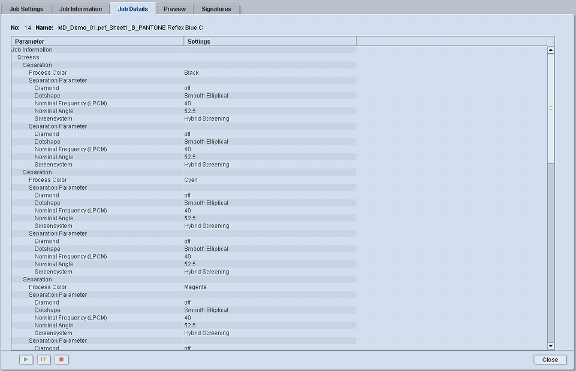
You can view more details about the open job in this tab, for example, separation color, resolution, output format, material, etc.
Tiff-B data are shown in this tab, such as:
The information about the material is very important because it can be passed on via the JDF or FBDI interface (see JDF (Job Definition Format) Support) Support) and can overwrite the "Material" property of the virtual printer (see Virtual Printers).
You can view a preview of the job in this tab. The preview can differ depending on how the job was processed:
This visual check lets you determine fast the content of a selected job. You can also use the preview as a layout and quality check and check before imaging whether all the image elements are present and fit to the page layout and whether the colors (process and spot colors) are assigned properly.
All the single separations (component jobs) are always present in a job if jobs are processed with a sorted output. For that reason, a preview of such a job comprises all the colors of the job.
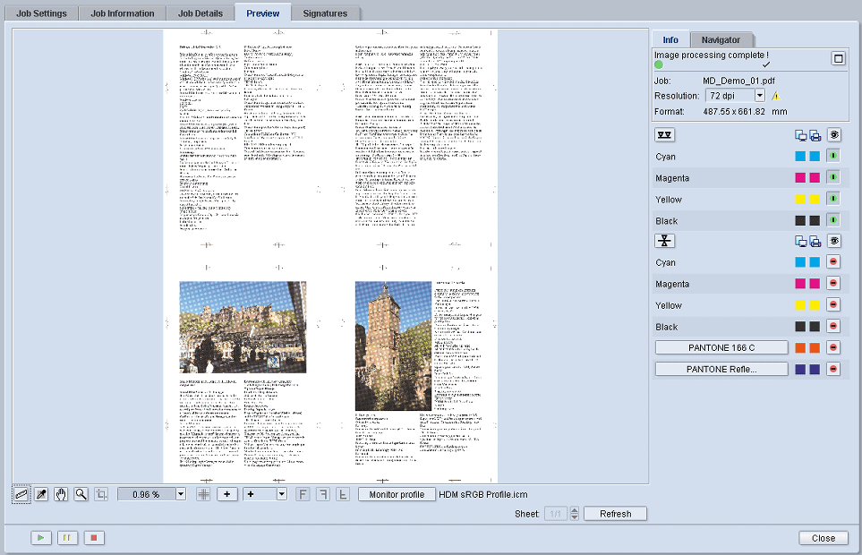
Correspondingly, the preview shown is multicolored if there are colored images or elements in the job.
You can only open single separations (component jobs) in an unsorted output mode.
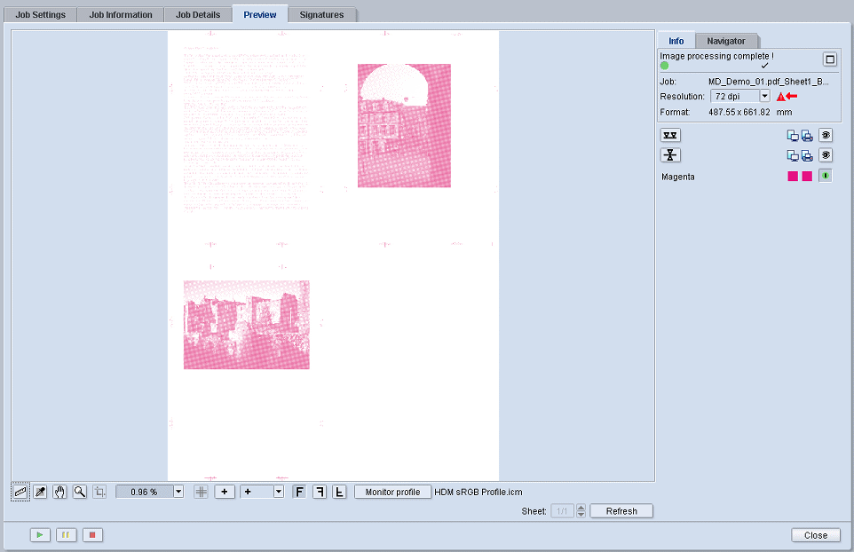
Correspondingly, the preview always shows a single-colored view of the component job.
You can switch the preview to the imagesetter resolution, for example, to check screening details in a higher zoom factor if you have a license for "Halftone Pattern Proof" When you open the "Preview" tab, a flashing symbol with a red arrow next to the "Resolution" list box indicates that a high-resolution preview is also available.
You can then switch to the imagesetter resolution in the list box and go back to the lower resolution when needed.
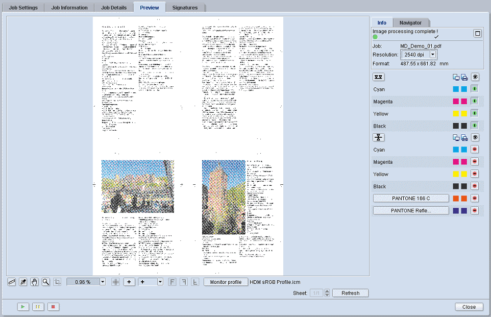
In a high resolution preview, the preview show the images "screened" to draw your attention to the fact that the page now displays in high resolution.
Various tools are available for viewing and measuring the preview images. You can use these tools for the following actions:
The sheets or pages are shown as contone images in a preview window on the left of the tab. Scroll bars appear if the image pane is too small for displaying the preview because of the set zoom factor. You will find a toolbar below the graphic.
The right part of the preview window contains the setup and display pane for the preview. You will find the following elements, from top to bottom:
You will find buttons for maximizing / restoring the Printmanager window in this tab:
Click "Maximize" or "Restore" to separate the preview window from the Printmanager and maximize the screen display or restore it again to the Printmanager.
A progress bar indicating how much of the image is already displayed is shown beside it:
The job name and details about the resolution (and the higher resolution option if you have it) and size of the display are shown below this.
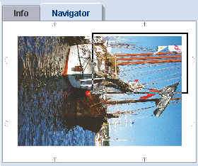
The Navigator window shows you an overview of the image that is loaded in the preview window. You can use the Navigator window as follows:
Proceed as follows for a bounding box: The mouse pointer turns into a cross when you move it to the Navigator window. Holding down the mouse button, create a box over the part of the preview you want. When you release the mouse button, the marked section is shown zoomed up in the display pane in the left column. You can now change the size or position of the marked section in the Navigator window.
Even if there already is a clip mask in the Navigator window, you can define a new clipped area by drawing a new box outside the existing mask. You can also draw a new box within an existing clip mask if you hold down the
Alt
key.
You can also scale up the display in the preview window with the zoom tool (magnifying glass). The box in the Navigator window now also shows the section shown in the preview window.
To change the clipped area, place the mouse pointer on a border or corner of the box. The mouse pointer now appears as a double arrow. Holding down the left button, you can now change the size of the box.
To move the clipped area, place the mouse pointer inside the box. The mouse pointer now appears as a hand. Holding down the left mouse button, you can now move the clipped area in the Navigator window.
It's quicker to move the mouse pointer to the position you want in the Navigator window and then click the left or right mouse button. The clip mask then moves to the position you clicked. The cross of the mouse pointer forms the center of the clipped area.
The toolbar also displays a rotating symbol while an image is being loaded to the screen because you cannot see the progress bar in the "Navigator" tab (see also the Info Tab).
This lists all the process color/spot color separations contained in the open job with names and two color boxes in each case. The color boxes show what the color looks like in the preview image on the monitor and when printed.
Besides the color names and the icons for display color, you will also find the following columns:
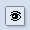
You enable or disable these functions by clicking the appropriate box in the each column. The boxes indicate their state as follows:
If you press the
Ctrl
key at the same time you click the "Show/hide separations" button, the button you clicked changes to the state you want. At the same time, all other "Show/hide separations" buttons switch to the opposite state of the button you clicked. In other words, the button you clicked is enabled and all other ones disabled or vice versa.
The preview image is recalculated every time you switch from showing to hiding a separation or vice versa. The progress bar appears ("Image processing ...") while this is going on.
Spot colors in a job are shown below the process colors in the display pane for the separations on the right of the window. Spot colors are shown as CMYK values for the screen preview. The CMYK values that will replace a spot color can come from various sources. You can modify these values by clicking the button with the spot color name to display it in the "Preview/Color" dialog (see the Changing the CMYK screen display of spot colors). A spot color that does not have a valid CMYK representation is shown by a striking color (generally bright green). This striking color is highlighted by question marks in the display pane for the separations.
 Note: These settings refer solely to the screen display and do not affect the imagesetter output.
Note: These settings refer solely to the screen display and do not affect the imagesetter output.
Click the button with the name of the spot color. A dialog opens where you can modify the screen display of the spot color.
The values for the CMYK representation of the spot color can be changed by means of the sliders or the input boxes.
The color which is currently set is shown in the "Current Color "color field. The last color set is shown in the "Previous Color" patch and the color taken from the color table in the "Default" patch.
Click the "Default" button to use the color from the color table. The "OK" button is used to adopt the color which is currently set and "Cancel" is used to close the window without adopting the settings.
Confirm your settings by clicking "OK". The dialog closes.
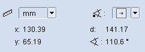
This pane shows settings or measurements. The setup and display panes vary depending on the tool you selected.
This example shows measured data.
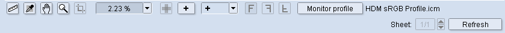
You will find the toolbar at the lower edge of the preview window. You will find the following tools from left to right:
You can make geometric measurements (length and angle) in the job preview. For example, this function allows you to check the positioning and size of objects.
1. Click the measurement tool ("ruler") in the toolbar.
2. Set the unit of measure you want (pixel, inch or mm) in the list box in the setup and display pane.
3. Holding down the left mouse button, drag a line along the length which you want to measure. Let go of the mouse button at your target. The measured line is kept until you draw a new one or change tool.
Note: Creating horizontal, vertical or diagonal lines is easier if you hold down the Shift key at the same time. These lines are drawn in steps of 45° seen from the base line.
4. You can view the geometry data of the measured line at the bottom right of the preview window:
You can select a unit of measure (pixel, inch or mm) in the list box above the measured data. The unit you select is also used for the image details (top right).
You can determine the color recipe of single pixels by means of the color data tool ("pipette").
1. Click the color data tool ("pipette") in the toolbar.
2. The color data at the position where the tip of the pipette is are measured.
3. At the bottom right, read the color data of the pixels marked by the mouse pointer.
If there are spot colors in the preview image, you can also measure the spot color portions. You can switch over between the CMYK and the spot color values in the list box above the measured data.
If you selected a scale-up factor in which only a part of the preview image can be seen, you can click the tool for shifting the image content ("hand").
You can then move the image section by positioning the mouse pointer over a part of the image and holding down the left mouse button. You can now move the image section.
Moving the image section with the "hand" tool in the preview window lets you position it a great deal more accurately than moving it in the Navigator window.
The display is constantly updated, for that reason, "jerky" movements are possible (depends on the data volume of your job and on the performance of your computer). High-resolution data can take quite some time for the display to be updated.
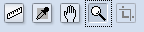
You can scale up (to 1,600%) or down the display of the preview image by means of the zoom tool ("magnifying glass"). This function can help you check the register accuracy, for example, or assess critical points in the image or measure the length or angle.
You can select from several set zoom factors in the list box besides the zoom tool. You can also enter your own zoom factor in the box and confirm it with
ENTER
. Any factors that you set separately are added to this list.
A preview always displays as an overview when a page opens the first time. You can change this display in several ways:
The button for showing a pixel matrix lets you show a matrix in the preview for zoom factors of 500% and higher. You can use this matrix, for example, for an analysis of screen problems.
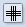
Click this button again if you wish to hide the matrix.
You can also load halftone bitmaps with exactly the same format as the open job to the bitmap preview. You can use this option, for example, to compare the halftone bitmap of a new separation with the original separation after a reprint.
In the list box, first select the page the bitmap will be loaded to. The following options are available:
A dialog appears when you click the "Add separation" button to the left of the list box. This dialog lets you load single bitmaps to the preview.
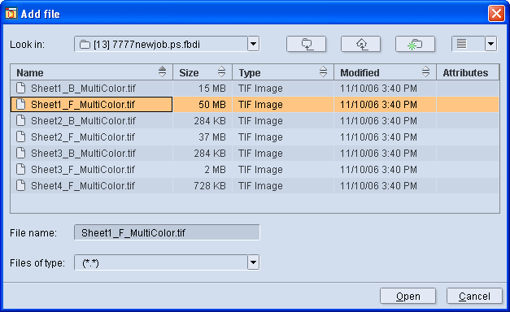
If necessary, you can use "Look in" to go to the folder where the bitmap file you want is filed. Select the bitmap file and click "Open". You can select several files at the same time by holding down the Shift or Ctrl key and clicking the various items. If the format of the bitmap matches the open job, the separation is loaded to the bitmap preview. It is assigned to the front or back as set in the list box.
These three buttons are only enabled if the front and back of a signature are loaded. These buttons let you control the orientation of the back without rotating the front. At least one separation on the back must be visible for this. The pixels on the front are shown together with those on the back so that you think that the back is "shining through".
Registration problems can occur if the page orientation or gripper edge are changed when the front and back of a signature are printed with the same form. To check this, you can change the orientation of the signature.
This function allows you to flip the back of the signature, depending on how the signature is used in the press (turn or tumble):
The back of the signature is flipped vertically (Tumble: turn from top to bottom).
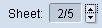
To view jobs with multiple pages, you can select the page you want in the list box or enter it in the text box.
Note: The page specified refers to one "sheet". You cannot select single pages on a signature or the front or back side with this function.
A true-color screen preview in softproof quality is not possible in the "Preview" tab. If Color Management is enabled for the processed jobs, the preview automatically is roughly true-color.
You can use an ICC profile you created (monitor characterization) for the preview:
To be able to use a true-color monitor display characterize the monitor you will use and store the ICC profile in the "...\UserDir\ICCProfiles\RGB" subfolder in the Prinect Shooter program folder.
Click the "Monitor profile" button in the "Preview" tab.
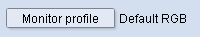
A browser dialog with the default path "...\UserDir\ICCProfiles\RGB" appears. Select the ICC profile matching your monitor. This profile will be used for the screen preview.
Note: To switch back to the default monitor profile, simply click "Monitor profile" holding down the Ctrl key.
Depending on your computer performance, it can take some time to calculate a preview with a large amount of data (large size and/or high resolution). You can stop a running image processing by clicking "Cancel". You can then recalculate the preview with other options.
A right-click on the preview image displays a context-sensitive menu.
You will find the following commands:
You can use this command if you want to go back to the previous zoom factor for viewing the preview.
This command is only available if you first selected "Previous view". It undoes this command.
The entire page is displayed in the preview.
Use this function to show or hide the setup and display pane.
You can set that the frame of the clipped area flashes in the Navigator window when you are in the "Navigator" tab. This can be useful if the color of the frame is barely different from the image motif of the Navigator window.
Note: Some keyboard shortcuts can only be used with certain user interface settings or job conditions (e.g. if there are spot colors).
From the contents of the TIFF-B files generated by Prinect MetaDimension, Prinect Shooter can see whether, for example, several color separations are part of one initial job. The "Signatures" tab displays all the separations that are in a job or component job if the jobs are sorted when output (see the Sorted and Unsorted Output ):
In the "Accounting attribute" list box, you can assign an accounting attribute within a Prinect system environment that marks the reason for reprinting the plates. This attribute is registered, for example, by "Prinect Analyze Point" and can be used for a later analysis. The following options are available:
The "Signatures" tab displays only the single signature of the open component job if the jobs are not sorted when output:
The "Signatures" tab lets you control the reprinting of separations (see the Reprinting Single Separations).
Copyright © 2013 Heidelberger Druckmaschinen AG